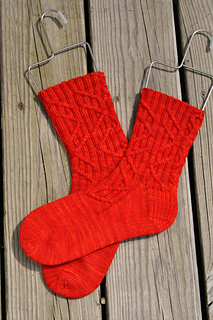
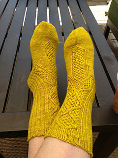
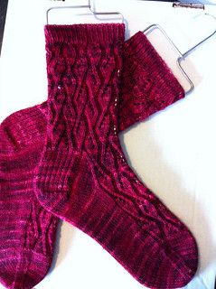
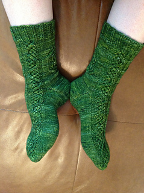
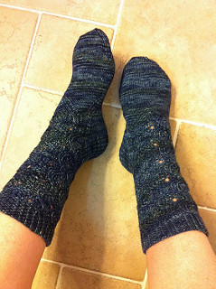

Sock Gallery

Milo
Milo is a fun pattern by Cookie A, sock designer extraordinaire.

Schwabische
Schwabische is a very intricate pattern by Lisa Stichweh.

Almondine
Almondine is a fun pattern by Anne Hanson.

Galadriel
Galadriel is a tricky pattern by Claire Allen.

Joshaqan
Joshaqan is an intricate pattern based on a Turkish rug, by Hunter Hammersen.
Milo
Milo is a fun pattern by Cookie A, sock designer extraordinaire.